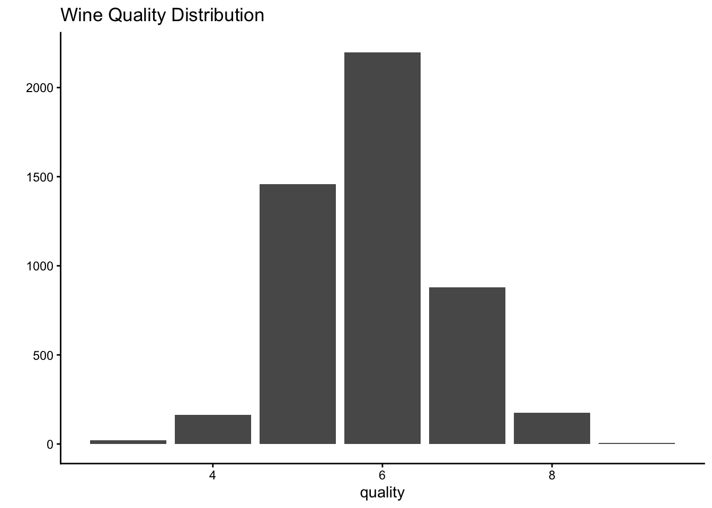
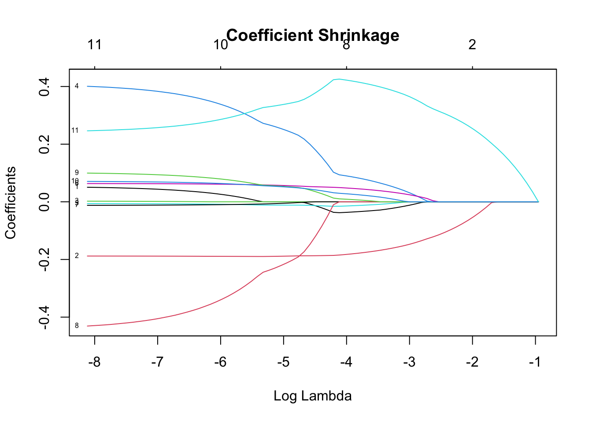
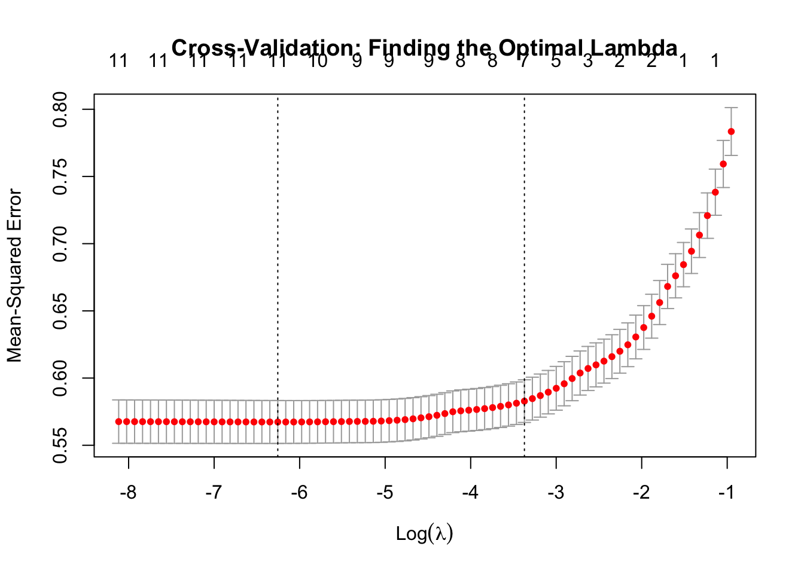

library(tidyverse)
library(glmnet) # The LASSO workhorse
library(janitor) # For clean column names
library(caret) # For easy cross-validationLearning Guide for LASSO Regression
Machine Learning
What You’ll Learn
Ever faced a dataset with dozens (or hundreds!) of potential predictors and wondered which ones actually matter? LASSO regression is your new best friend. By the end of this guide, you’ll know how to:
- Use LASSO to automatically select the most important features from your data
- Tune LASSO’s penalty parameter to find the sweet spot between accuracy and simplicity
- Interpret which variables LASSO keeps (and which it tosses out)
- Apply LASSO to a new dataset on your own
What is LASSO? Regular linear regression works by assigning a coefficient to each predictor in the dataset. It works well with just a few predictors but in larger datasets it will struggle with overfitting and interpretability. LASSO (Least Absolute Shrinkage and Selection Operator) solves these problems by introducing the parameter lambda (λ), which penalizes model complexity. At lambda = 0, LASSO is just regular linear regression, and very high lambdas will zero out all the coefficients, leaving just an intercept (which obviosuly isn’t very helpful for making predictions!). The goal is to find a lambda in the sweet spot of accuracy and parsimony (a more technical term for simplicity), and what’s great about LASSO is that it automatically does this for us.
Setup
The Data: Wine Quality
We’ll use the Wine Quality dataset - chemical measurements that predict wine quality ratings. It’s great for LASSO because we have 11 numerical predictors, some of which might be redundant or uninformative.
# Load the data
wine <- read_delim("https://archive.ics.uci.edu/ml/machine-learning-databases/wine-quality/winequality-white.csv", delim = ";", locale = locale(decimal_mark = "."))Rows: 4898 Columns: 12
── Column specification ────────────────────────────────────────────────────────
Delimiter: ";"
dbl (12): fixed acidity, volatile acidity, citric acid, residual sugar, chlo...
ℹ Use `spec()` to retrieve the full column specification for this data.
ℹ Specify the column types or set `show_col_types = FALSE` to quiet this message.# Clean up column names (remove spaces)
library(janitor)
wine <- clean_names(wine)
# Explore the data
head(wine)# A tibble: 6 × 12
fixed_acidity volatile_acidity citric_acid residual_sugar chlorides
<dbl> <dbl> <dbl> <dbl> <dbl>
1 7 0.27 0.36 20.7 0.045
2 6.3 0.3 0.34 1.6 0.049
3 8.1 0.28 0.4 6.9 0.05
4 7.2 0.23 0.32 8.5 0.058
5 7.2 0.23 0.32 8.5 0.058
6 8.1 0.28 0.4 6.9 0.05
# ℹ 7 more variables: free_sulfur_dioxide <dbl>, total_sulfur_dioxide <dbl>,
# density <dbl>, p_h <dbl>, sulphates <dbl>, alcohol <dbl>, quality <dbl>dim(wine)[1] 4898 12names(wine) [1] "fixed_acidity" "volatile_acidity" "citric_acid"
[4] "residual_sugar" "chlorides" "free_sulfur_dioxide"
[7] "total_sulfur_dioxide" "density" "p_h"
[10] "sulphates" "alcohol" "quality" Our goal: predict quality (wine rating from 0-10) using chemical properties.
# What's our target variable look like?
wine %>%
ggplot(aes(x = quality)) +
geom_bar() +
labs(title = "Wine Quality Distribution", y = "") +
theme_classic()
# Quick correlation check
cor(wine) %>%
round(2) %>%
as.data.frame() %>%
select(quality) %>%
arrange(desc(quality)) quality
quality 1.00
alcohol 0.44
p_h 0.10
sulphates 0.05
free_sulfur_dioxide 0.01
citric_acid -0.01
residual_sugar -0.10
fixed_acidity -0.11
total_sulfur_dioxide -0.17
volatile_acidity -0.19
chlorides -0.21
density -0.31Part 1: Your First LASSO Model
LASSO requires a specific data format: a matrix of predictors (X) and a vector of outcomes (y).
# Separate predictors and outcome
X <- wine %>%
select(-quality) %>%
as.matrix()
y <- wine$qualityUnderstanding Lambda (λ)
LASSO has one key tuning parameter: lambda (λ), the penalty strength. As a reminder:
- Large λ: Strong penalty → fewer features, simpler model (might underfit)
- Small λ: Weak penalty → more features, complex model (might overfit)
- λ = 0: No penalty → regular linear regression (all features)
Let’s fit LASSO across a range of lambda values:
# Set seed for reproducibility
set.seed(452)
# Fit LASSO for a sequence of lambda values
# alpha = 1 means LASSO (alpha = 0 would be Ridge regression)
lasso_model <- glmnet(X, y, alpha = 1)
# Standardize X before fitting
X_scaled <- scale(X)
# Fit LASSO on scaled data
lasso_model <- glmnet(X_scaled, y, alpha = 1)
# Plot the coefficients as lambda increases
plot(lasso_model, xvar = "lambda", label = TRUE)
title("Coefficient Shrinkage")
# Codebook for which variables the numbers correspond to
rownames(lasso_model$beta) [1] "fixed_acidity" "volatile_acidity" "citric_acid"
[4] "residual_sugar" "chlorides" "free_sulfur_dioxide"
[7] "total_sulfur_dioxide" "density" "p_h"
[10] "sulphates" "alcohol" What are you seeing? Each colored line represents one predictor. As lambda increases (moving right), coefficients shrink toward zero. Some hit zero quickly (unimportant features), others persist longer (important features).
Notice something weird? The coefficient for alcohol concentration actually increases as lambda grows, before eventually coming back down to earth. This happens when predictors are correlated - as LASSO eliminates one variable, another related variable’s coefficient can temporarily grow to compensate. This is normal LASSO behavior!
Part 2: Finding the Best Lambda with Cross-Validation
Which lambda is best? We use cross-validation to test many lambdas and pick the one with best prediction accuracy. Specifically, we will utilize 10-fold CV, which splits the dataset into 10 “folds” which the model predicts using the other 9 as training data. This allows the model to simulate how well it might perform on entirely new data within the original dataset, which helps prevent overfitting.
# 10-fold cross-validation
cv_lasso <- cv.glmnet(X, y, alpha = 1, nfolds = 10)
# Visualize the results
plot(cv_lasso)
title("Cross-Validation: Finding the Optimal Lambda")
The plot shows: - X-axis: Lambda values (log scale) - Y-axis: Mean Squared Error (lower is better) - Error bars: Uncertainty in the error estimate - Vertical lines: - Left line (lambda.min): Lambda with lowest error - Right line (lambda.1se): Simplest model within 1 standard error of minimum
We can see that overfitting isn’t too much of an issue, as the most complex models all have roughly the same accuracy. But LASSO is still doing work to simplify our model. A common practice is to take the simplest model within 1 standard error of the best-performing one. The goal is to maintain accuracy while significantly improving parsimony: let’s see if it succeeds here.
# The "best" lambda (minimum error)
lambda_min <- cv_lasso$lambda.min
cat("Lambda with minimum error:", lambda_min, "\n")Lambda with minimum error: 0.001919749 # The parsimonious lambda (good rule of thumb - simpler model, nearly as good)
lambda_1se <- cv_lasso$lambda.1se
cat("Lambda for simplest good model:", lambda_1se, "\n")Lambda for simplest good model: 0.03433759 # How do they perform? (RMSE = typical error in quality points)
cat("\nMin Lambda RMSE:", round(sqrt(min(cv_lasso$cvm)), 3), "\n")
Min Lambda RMSE: 0.753 cat("1-SE Lambda RMSE:", round(sqrt(cv_lasso$cvm[cv_lasso$lambda == lambda_1se]), 3), "\n")1-SE Lambda RMSE: 0.763 We can see that both models have very similar accuracy, which we’re measuring using “RMSE” or “root mean squared error.” There’s some fairly complex math involved, but it essentially tells us that a “typical” error for the model is about 0.76. So if the model predicts the quality of a wine to be 4.5, it’s quite likely to be 4 or 5 in actuality. Now let’s compare them in terms of parsimony.
# Compare lambda.min vs lambda.1se
coef_min <- coef(cv_lasso, s = "lambda.min")
coef_1se <- coef(cv_lasso, s = "lambda.1se")
cat("Features at lambda.min:", sum(coef_min != 0) - 1, "\n") # -1 for interceptFeatures at lambda.min: 11 cat("Features at lambda.1se:", sum(coef_1se != 0) - 1, "\n")Features at lambda.1se: 7 The most accurate model actually kept all the predictors in the model. We might as well have used regular linear regression! Thankfully, our more parsimonious model was able to zero out four unimportant predictors without sacrificing much in terms of predictability. Here’s how it looks in the end:
# Which features survived?
selected_features <- coef_1se@Dimnames[[1]][coef_1se@i + 1]
cat("\nFeatures selected by LASSO:\n")
Features selected by LASSO:print(selected_features)[1] "(Intercept)" "fixed_acidity" "volatile_acidity"
[4] "residual_sugar" "chlorides" "free_sulfur_dioxide"
[7] "sulphates" "alcohol" # Show non-zero coefficients
non_zero <- coef_1se[coef_1se[,1] != 0, ]
non_zero (Intercept) fixed_acidity volatile_acidity residual_sugar
2.991794989 -0.030425102 -1.633435324 0.011697228
chlorides free_sulfur_dioxide sulphates alcohol
-0.321185056 0.002121778 0.116427977 0.319294973 Part 3: Apply LASSO to Your Own Question
Now it’s time to get hands-on!
Red vs White Wine
There’s another dataset for red wines. Does this need a different model? 1. Load the red wine dataset (done for you). 2. This dataset has the same variables, so try using our current model. How well does it perform? 3. Fit a new LASSO model to red wine. 4. Compare which features matter for red vs white wine quality. 5. Are they different? Why might that be?
# Load the data
red_wine <- read_delim("https://archive.ics.uci.edu/ml/machine-learning-databases/wine-quality/winequality-red.csv", delim = ";", locale = locale(decimal_mark = "."))Rows: 1599 Columns: 12
── Column specification ────────────────────────────────────────────────────────
Delimiter: ";"
dbl (12): fixed acidity, volatile acidity, citric acid, residual sugar, chlo...
ℹ Use `spec()` to retrieve the full column specification for this data.
ℹ Specify the column types or set `show_col_types = FALSE` to quiet this message.# Clean up column names (remove spaces)
library(janitor)
red_wine <- clean_names(red_wine)# Your code here!Quick Reference: LASSO Workflow
Here’s the essential workflow you can adapt to any regression problem:
# 1. Prepare data
X <- your_data %>% select(-outcome) %>% as.matrix()
y <- your_data$outcome
# 2. Cross-validation to find best lambda
cv_model <- cv.glmnet(X, y, alpha = 1)
# 3. Extract coefficients
coef(cv_model, s = "lambda.1se")
# 4. Make predictions
predictions <- predict(cv_model, newx = X, s = "lambda.1se")ADVANCED CHALLENGES
Want to go deeper? Try these:
Challenge 1: Elastic Net
LASSO can be unstable when features are highly correlated. Elastic Net combines LASSO (α=1) with Ridge regression (α=0) to handle this better.
# Try alpha = 0.5 (halfway between Ridge and LASSO)
# cv_elastic <- cv.glmnet(X, y, alpha = 0.5)
# Compare performance and feature selection to pure LASSOChallenge 2: Custom Lambda Sequence
Instead of letting glmnet choose lambdas, specify your own:
# Create a custom sequence from very small to very large
# custom_lambdas <- 10^seq(-3, 3, length = 100)
# cv_custom <- cv.glmnet(X, y, alpha = 1, lambda = custom_lambdas)
# Does this change your results?Challenge 3: Stability Selection
Run LASSO 100 times on bootstrap samples. Which features are selected most consistently?
# Hint: Use a loop, sample your data with replacement,
# fit LASSO, record which features have non-zero coefficients
# Features selected in 80%+ of runs are probably truly important!Key Takeaways
- LASSO automatically selects features by shrinking coefficients to exactly zero
- Lambda controls the strength of this selection (higher λ = fewer features)
- Cross-validation finds the optimal lambda balancing accuracy and simplicity
- lambda.1se is often better than lambda.min for interpretability
- LASSO works best when you have many predictors and suspect some aren’t useful
Going Further
- Try
glmnetwithfamily = "binomial"for classification problems - Explore the
caretpackage’strain()function for even easier LASSO fitting - Read the original LASSO paper: Tibshirani (1996) - it’s surprisingly readable!
- Check out the
glmnetvignette:vignette("glmnet")